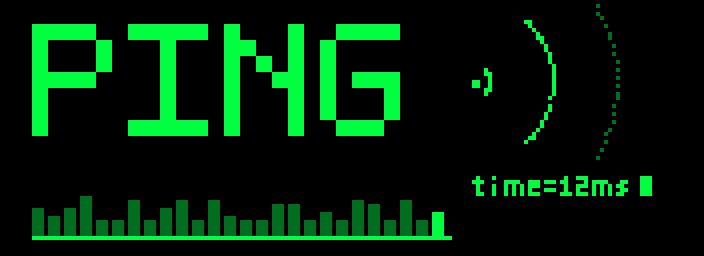

European University Institute · Florence · 2026–27
[ schedule | formats | scope | mailing list ]
PING is a new EUI working group on politics and the internet. Computational social science at the core, other disciplines and methods welcome. A place to present ongoing work and get constructive feedback. Meets on Wednesdays, 14:30–15:45 in 2026 and 16:30–17:45 in 2027, followed by an apéro. All EUI members (faculty, researchers, fellows, visiting fellows) welcome.
| Date | Room | Presenter | Title |
|---|---|---|---|
| 2026 · 14:30–15:45 | |||
| Wed 14 Oct Exceptionally starts at 17:00 | Seminar Room 3, Badia Fiesolana | Amélie Ruiz-Dormet (EUI) | Gender Trouble in Online Childfree Communities. A Computational Grounded Analysis of Childfree Narratives on Reddit (2020–2024) |
| Wed 28 Oct | Sala Belvedere, Villa Schifanoia | Filippo Andrei (UniVie) | Knowing More, Seeing Risk Differently: Algorithmic Literacy and Online Risk Perception |
| Emelie Karlsson (Uppsala) | Media Narratives and the Second-Order Effects of Digital Election Interference | ||
| Wed 4 Nov | Sala Belvedere, Villa Schifanoia | Mateo Vásquez-Cortés (UC San Diego) | Elevating Positive Narratives: WhatsApp Campaign Effects on Migrant-Host Relations in Colombia |
| Wed 11 Nov | Seminar Room 3, Badia Fiesolana | Prashant Garg (Bocconi) | |
| Wed 25 Nov | SPS Meeting Room, Villa Sanfelice | Andreas Küpfer (TU Darmstadt) | Parliamentary Debate on Video: Seeking Eye Contact, Power, and Online Attention |
| Wed 9 Dec | Seminar Room 1, Badia Fiesolana | Jihye Park (Geneva) | Expand and Exempt: Compensation and the Politics of US Chip Export Controls |
| 2027 · 16:30–17:45 | |||
| Wed 13 Jan | Seminar Room 3, Badia Fiesolana | Eszter Hargittai (University of Zurich) | |
| Wed 27 Jan | Seminar Room 2, Badia Fiesolana | TBA | |
| Wed 10 Feb | Seminar Room 2, Badia Fiesolana | TBA | |
| Wed 24 Feb | Seminar Room 2, Badia Fiesolana | TBA | |
| Wed 10 Mar | Seminar Room 2, Badia Fiesolana | TBA | |
| Wed 24 Mar | Seminar Room 2, Badia Fiesolana | TBA | |
| Wed 7 Apr | Sala del Capitolo, Badia Fiesolana | TBA | |
| Wed 21 Apr | Sala del Capitolo, Badia Fiesolana | TBA | |
| Wed 5 May | Sala del Capitolo, Badia Fiesolana | TBA | |
| Wed 19 May | Seminar Room 3, Badia Fiesolana | TBA | |
| Wed 2 Jun | Sala del Capitolo, Badia Fiesolana | TBA | |
Getting there: EUI campus map and buildings. The EUI runs a shuttle bus between buildings.
Each session runs 1h15. Two options:
Digital technologies and politics, broadly defined:
Any method: computational text and network analysis, field and survey experiments, causal inference with observational and digital trace data, qualitative and ethnographic work on online communities, theory.
Sign up for email announcements
Questions: kevin.munger@eui.eu
Organized by Kevin Munger and Sebastian Ramirez-Ruiz.
$ ping eui.eu
Last updated 26 October 2026.